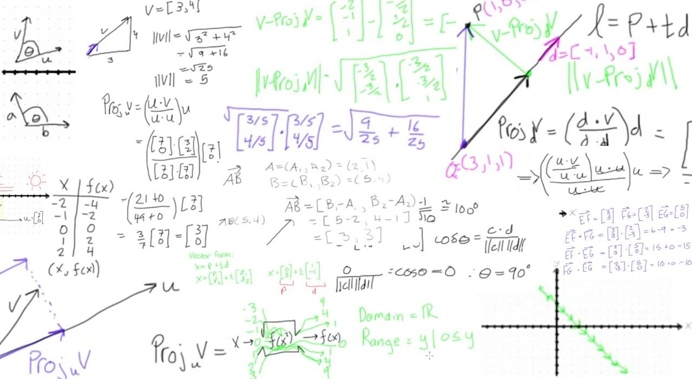
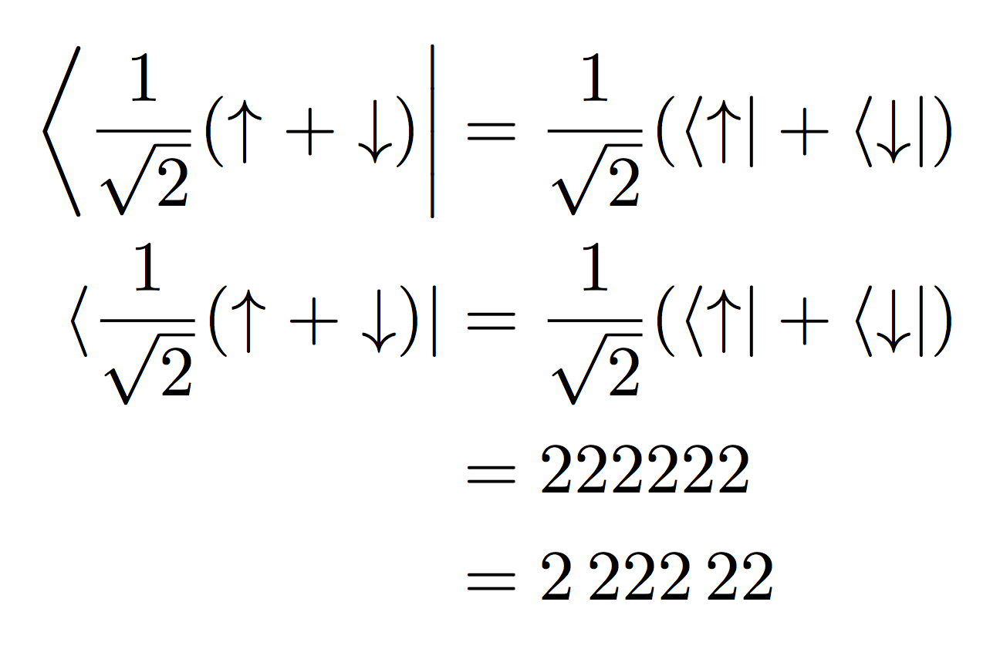

Algèbre Linéaire & Notation Bra-ket
L'algèbre linéaire est une branche des mathématiques qui étudie les espaces vectoriels et les transformations linéaires. Elle joue un rôle crucial en physique quantique, permettant de décrire les états quantiques des systèmes physiques.
Concepts Fondamentaux d'Algèbre Linéaire
Espaces vectoriels
Un espace vectoriel est un ensemble E sur lequel on peut définir deux opérations :
- Addition vectorielle : qui à deux vecteurs u et v de E associe un troisième vecteur u + v de E.
- Multiplication par un scalaire : qui à un scalaire λ et à un vecteur u de E associe un vecteur λu de E.
Ces opérations doivent satisfaire certaines propriétés, comme la commutativité et l'associativité de l'addition vectorielle, la distributivité de la multiplication par un scalaire par rapport à l'addition vectorielle et à la multiplication par un autre scalaire.
Propriétés des Espaces vectoriels
- Dimension : Un espace vectoriel peut avoir une dimension finie ou infinie. La dimension représente le nombre minimal de vecteurs linéairement indépendants nécessaires pour générer l'espace entier.
- Bases : Une base d'un espace vectoriel est un ensemble de vecteurs linéairement indépendants qui génère l'espace vectoriel tout entier.
- Transformations linéaires : Une transformation linéaire est une application f entre deux espaces vectoriels E et F qui préserve les structures vectorielles, c'est-à-dire :
- f(u + v) = f(u) + f(v) pour tous les vecteurs u et v de E.
- f(λu) = λf(u) pour tous les scalaires λ et tous les vecteurs u de E.
Applications de l'Algèbre Linéaire
L'algèbre linéaire est utilisée dans de nombreux domaines, notamment la physique, l'ingénierie, l'informatique, l'économie et la finance.
Notation Bra-ket
La notation bra-ket est une convention utilisée en physique quantique pour représenter les vecteurs d'un espace vectoriel et les transformations linéaires.
- Ket : Un ket symbolise un vecteur d'un espace vectoriel. Il est généralement représenté par un symbole vertical suivi d'une lettre ou d'un groupe de lettres, par exemple |ψ⟩.
- Bra : Un bra est le transposé conjugué d'un ket. Il est généralement représenté par un symbole horizontal suivi d'une lettre ou d'un groupe de lettres entre parenthèses, par exemple ⟨φ|.
- Produit scalaire : Le produit scalaire de deux kets |ψ⟩ et |φ⟩ est un nombre complexe, noté ⟨φ|ψ⟩.
- Transformation linéaire : Une transformation linéaire est représentée par une matrice. L'action de la transformation sur un ket |ψ⟩ est notée par A|ψ⟩.
Propriétés de la Notation Bra-ket
- Le produit scalaire de deux kets est linéaire en chaque argument.
- Le produit scalaire d'un ket avec lui-même est positif.
- Le produit scalaire de deux kets est nul si et seulement si les kets sont orthogonaux.
Applications de la Notation Bra-ket
- Mécanique quantique : Description des états quantiques des particules.
- Électromagnétisme quantique : Description des interactions entre les photons et les champs électromagnétiques.
- Théorie des champs quantiques : Description des interactions entre les particules.
L'algèbre linéaire et la notation bra-ket sont des outils essentiels pour la physique quantique. Elles permettent de décrire les états quantiques des systèmes physiques et d'étudier leur évolution.